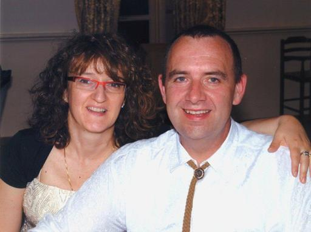

Chi siamo

Siamo una società operante in campo industriale fin dal 1993. La nostra attività principale consiste nella manutenzione di pompe dosatrici e di impianti di miscelazione liquidi. La nostra pluriennale esperienza sull'intero territorio nazionale ha messo in evidenza la necessità di gestire un magazzino ricambi in modo economicamente vantaggioso, tecnicamente all'avanguardia ed efficace nel rispondere alle esigenze della clientela. In quest'ambito abbiamo sviluppato una rete di servizi che vanno dall'esecuzione di pezzi a disegno, alla rettifica di parti usurate, al reperimento, stoccaggio e distribuzione di parti di ricambio, sia standard che realizzate su specifica richiesta del cliente.